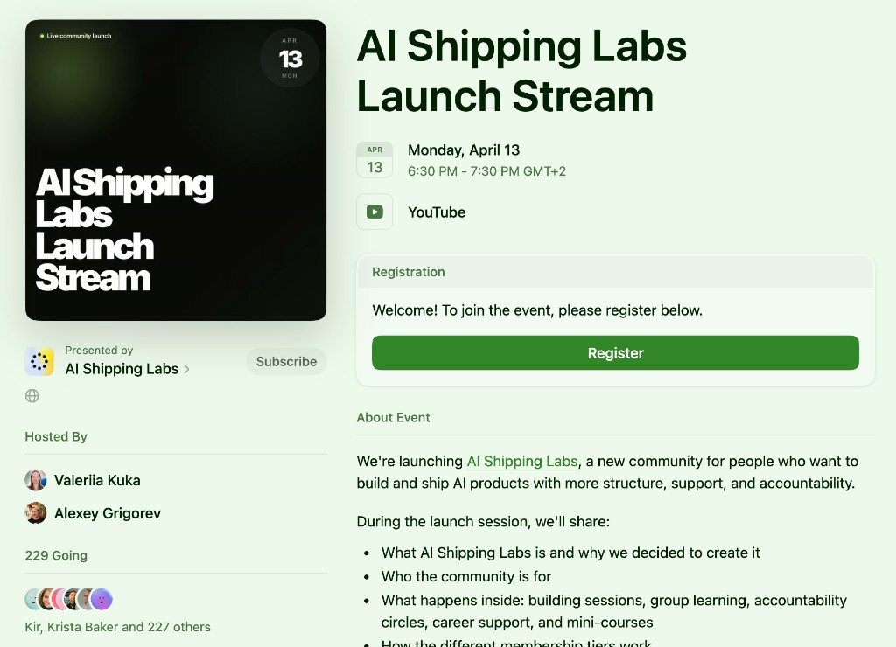
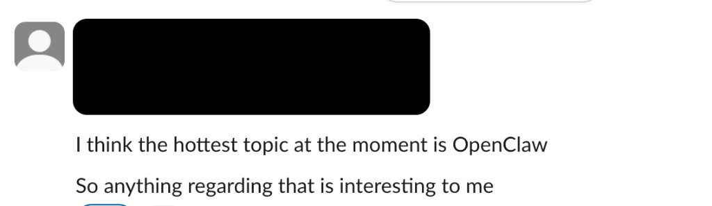

AI Shipping Labs Launch
A community for builders who want structure, support, and progress
Alexey Grigorev & Valeriia Kuka
April 13, 2026
Launch Stream

Launch stream event page
Today's Agenda
- Why learning AI alone often stalls
- How it usually shows up
- What AI Shipping Labs is
- How the community works in practice
- How to choose the right tier
- Why this exists alongside DataTalks.Club
There is always one more thing that feels important

What happens
You see a new tool, a new benchmark, a new workflow, and it immediately feels like something you should pay attention to. Even if you were trying to stay focused, your attention gets pulled away again.
Result
So instead of moving forward with your own project, you are pulled toward one more thing that feels urgent.
After a while, it becomes hard to tell what actually matters

What happens
When you keep seeing people talk as if some new tool or resource is essential, it becomes harder for you to tell what is genuinely useful and what is just competing for your attention.
Result
So you can spend a lot of time trying to keep up without getting much clearer about what to do next.
And your own project starts losing to everything else

What happens
You start with one thing you wanted to build. Then you see another idea, another approach, another tool that also seems worth exploring. Gradually, your attention gets split, and your own work stops moving.
Result
So your project loses momentum, not because you stopped caring, but because it became too easy to keep switching direction.
So even choosing a project can start to feel overwhelming

What happens
People often describe learning AI as drinking from a firehose. By the time you try to think of a project to build, you may already feel lost and overloaded.
Result
So people often get stuck before they even choose a project or take the first concrete step.
That is why simple mentoring advice is usually not enough

What happens
Alexey gets mentoring requests all the time. But in many cases, what people need is not just one good piece of advice.
Main point
They need a structure that helps them keep moving after the conversation ends.
Your working space from day one

Slack workspace
When you join, you get immediate access to the Slack workspace, where the community actually works together.
What people use it for
This gives people one shared place to ask questions, share progress, and stay close to what others are building.
Example: OpenClaw session candidate


Member request
A concrete member request can easily become a useful building session for the whole community.
Why it can help other people too
One person brings a specific implementation question, but the discussion is often useful for many people building with AI.
Example: LiteHive problem-solving

Alexey's project
Another example is when Alexey brings a real problem from his own project and works through it with the community.
What people can learn from it
That gives people a chance to watch how someone more experienced reasons through a messy, real-world problem.
Example breakdown: Karpathy's AutoResearch

alexeyondata.substack.com/p/karpathys-autoresearch-went-viral

DataTalks.Club is not going away

What stays the same
All Zoomcamps continue. Free education stays free.
What AI Shipping Labs adds
AI Shipping Labs adds a smaller and more involved layer of support. It does not replace the free educational work that already exists.
Part 8
How to join
If you want to join after the talk, you can use the QR code or open the link below.